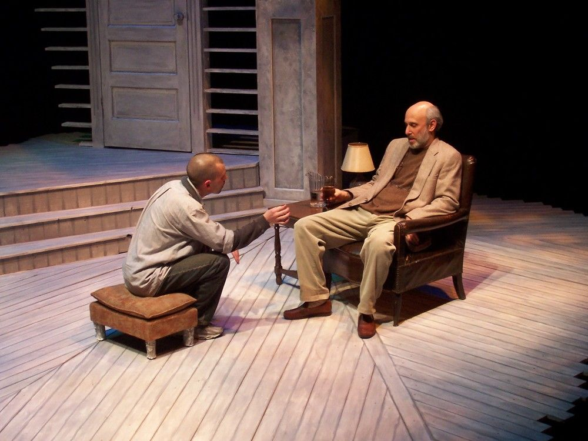
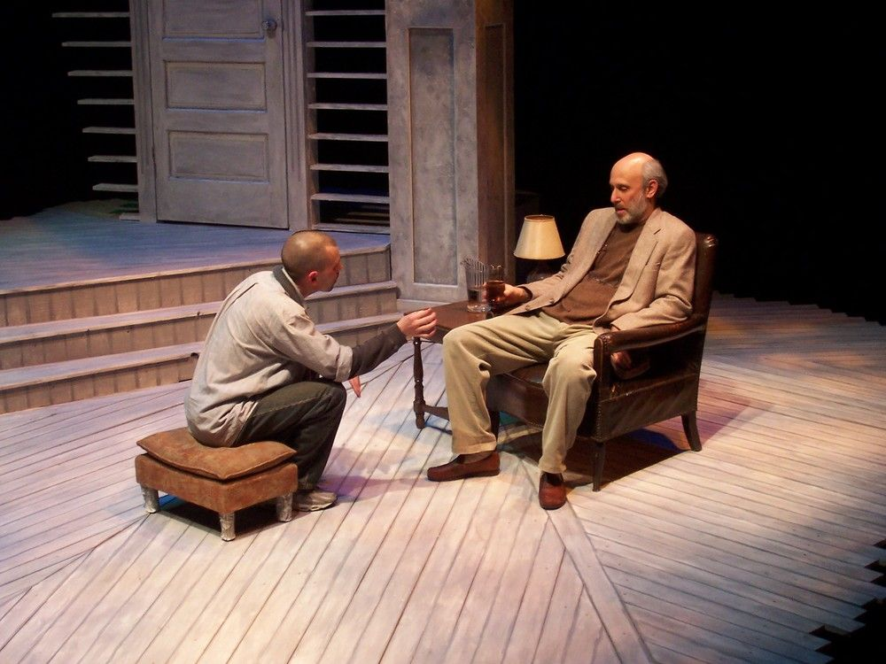

Characters
Salter
The biological father of all of the clones. His deep love of his sons is questioned as they discover their true nature. Salter is a depressed alcoholic who never forgave himself for the death of his wife and in trying to start over with a clone of his only son, drove himself deeper into a spiral of self loathing. Finding out that the doctors made more clones of Bernard 1 both angers, scares, and captivates him. He is left questioning his role as a father and grieving in the wake of his decisions.Bernard 1
Salter's natural born son. His mother died when he was two which was the traumatic event that is the source of a lifetime of fear, projected abuse, emotional distancing and hatred. He despises Salter for having the other clones made and he especially hates B2 who was raised by Salter.Bernard 2
Salter's cloned son, he raised him from the 'age' of 4. Upon finding out how he was created and that there are more 'versions' of him, Bernard 2 is intruiged and a little disgusted as well as fearful for his safety. He decides to flee the country, against Salter's wishes.Alex Black
One of the exterior clones that Salter has never met. It is unclear whether Alex knew that he was a clone before meeting Salter. Black is intruiged and not at all disgusted or angry that he is a clone, unlike his 'brothers'
Playwright: caryl churchill
"The first dramatist of the 21st century"
An English born playwright, Churchill is known for her naturalistic style as well as hard hitting motifs surrounding sexual politics and feminism. She was born in 1938 in london, her family moved to montreal when she was 10. Churchill returned to England for university where she attended Oxford for English Literature. She has received over a dozen awards for her works spanning 1958 to 2012.
Other Works by Churchill:
Design Elements
 

The central motifs here are rage, betrayal, depression, alcoholism, abuse/neglect and grief. Salter has felt alone for so long, even though he has his son, he has doubts about what he has done. Design is usually simple or bland; some use of mirrors can be useful analogy.
Real World/Legal
ASSOCIATION FOR MOLECULAR PATHOLOGY ET AL. v. MYRIAD GENETICS, INC.,
Diamond v. Chakrabarty, 447 U.S. 303 (1980)
Alexandre Dumas novella, "The Corsican Brothers,"
Twin Mythconceptions, Nancy Segal
Timeline
Science of cloning
Click on a year to view the cloning history
Humans discover that they can improve corn crops by planting seeds from the best plants.
Gregor Mendel publishes “Experiments in Plant Hybridization,” which establishes the basic laws of inheritance. Mendel comes to be known as the father of genetics.
Pheobus Levene discovers a previously unknown sugar, deoxyribose, in nucleic acids that do not contain ribose; those nucleic acids are now known as deoxyribonucleic acids, or DNA.
Oswald Avery discovers genetic information is carried by the nucleic acids of cells.
J.B.S. Haldane coins the term clone.
Niremberg, Mathaei, and Ochoa determine which codon sequences specify each of the 20 amino acids, thereby “cracking the genetic code” and opening the door to advances in genetic engineering.
U.S. Supreme Court rules that live, human-made organisms are patentable material.
Scientists and ethicists testifying at a Senate hearing on cloning urge Congress not to rush to ban research on the cloning of human beings. President Clinton signs a five-year moratorium on the use of federal funds for human cloning research. His National Bioethics Advisory Commission had concluded that human cloning would be unsafe and unethical. The scientists who produced Dolly announce that they have created a lamb with a human gene in every cell of its body. Named Polly, the lamb was produced using a method similar to that used to create Dolly. Richard Seed, a successful fertility researcher, announces his plans to clone a human.
Britain becomes the first country to grant a patent for cloned early-stage human embryos. Geron Corporation, which received the patent, says it has no intention of creating cloned humans.
The first human clone embryo is produced; it is planned for embryonic stem cell harvesting, not reproductive cloning. However, it stops dividing before stem cells can be harvested.
The first cloned bantengs (endangered species) were born to cows. The genetic donor had died 23 years earlier and his DNA preserved in the “Frozen Zoo” at San Diego Zoo’s Center for the Reproduction of Endangered Species.
Researchers at Seoul National University produce Snuppy, the first clone of a domestic dog.
Chinese police clone police dog for service, claiming it saves time and money